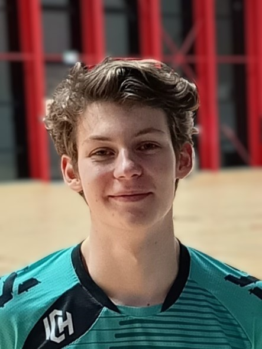

Étudiant en BUT Informatique à Nantes, parcours Polytech, actuellement en 2e année.
Je recherche un stage de 8 à 12 semaines du 14 avril au 18 juin 2027.
Passionné par le développement logiciel, la gestion de données et l’algorithmique, je m’intéresse également à l’organisation, à la rigueur et à l’innovation en équipe.
Voir mon CV